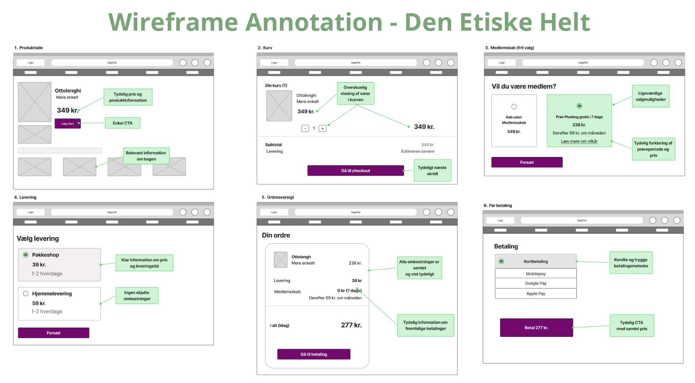
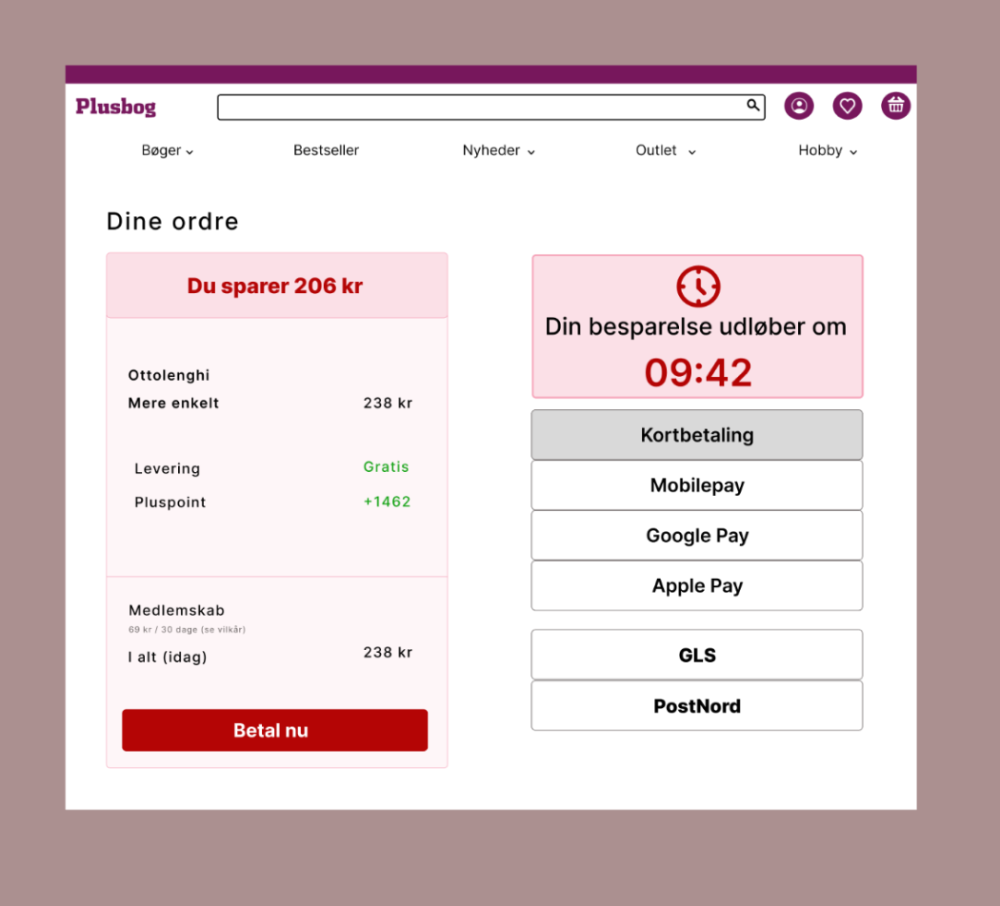
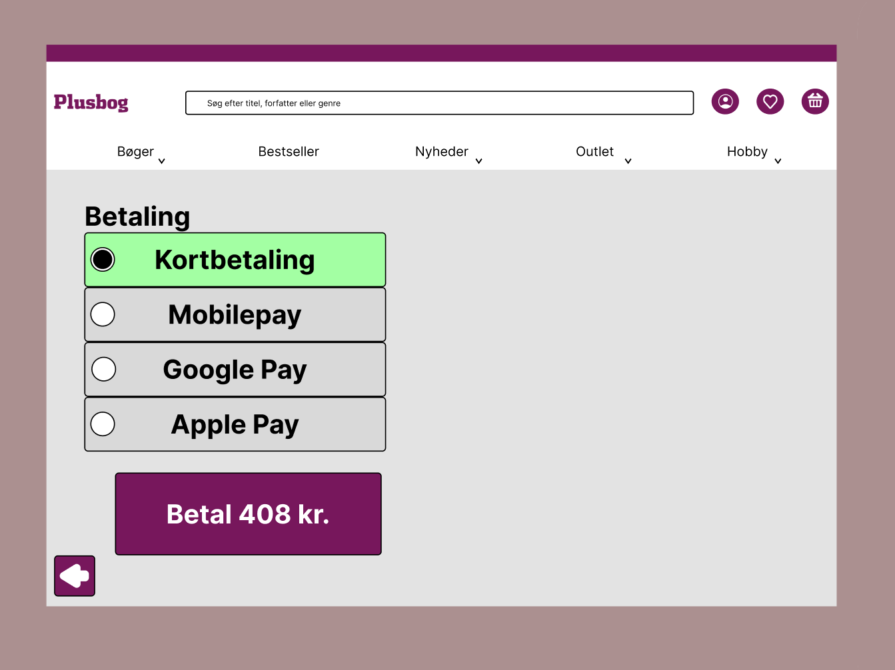

bog

Opgaven
Vi skulle lave to versioner af en boghandler hjemmeside.
Processen
Vi så boghandler hjemmeside igennen flere gange for at finde steder hvor vi ville kunne burge det til enten helte eller skurge re-designed. Vi fik brianstormet o
Resultatet
Vi ende med to versioner en helt og skurg, helte vedrøgerne gik ud på at være så åben over for kunden som muligt og ikke at skuje noget. Hvorimod skurge verisionen bruger tjeck bokser der allerede var tjekket af og timere til at skynde på kunden. Opgaven satte virklig lys på hvordan design kan påvirke brugeroplevelsen.

